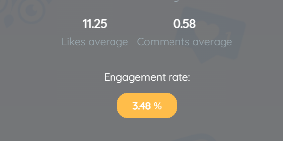
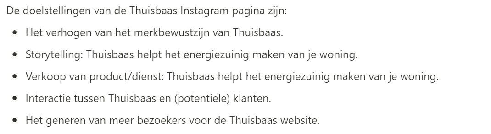
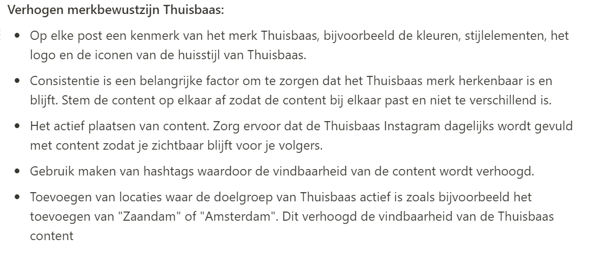
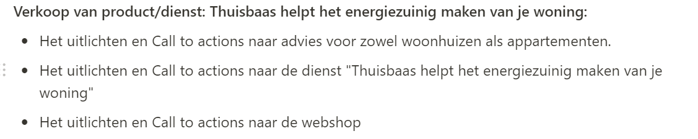

Aanpak
Voor het sociale media kanaal Instagram heb ik een social media strategie
uitgewerkt voor Thuisbaas de dochteronderneming van Urgenda. In de strategie heb ik verschillende
onderwerpen uitgewerkt als: "Waarom Instagram inzetten", "huidige situatie", "doelstellingen", "strategie
organisch" en "strategie advertenties".
Waarom Instagram inzetten
De doelgroep van Thuisbaas ligt qua leeftijd tussen de 25 en 65 jaar. De
doelgroep van Instagram ligt echter een stuk lager. Uit mijn algemene social media onderzoek bleek dat de
grootste groep gebruikers van Instagram is namelijk
tussen de 15-19 jaar. Voor Thuisbaas willen we Instagram daarom vooral gaan toepassen om het jongere segment
aan te spreken van de Thuisbaas doelgroep.
Huidige situatie
Op het moment van het onderzoek had de Thuisbaas Instagram 323 volgers en
volgde het 363 kanalen. Het gemiddelde aantal likes op een post was op 15 november 2021 11,25 en het
gemiddelde aantal comments is 0,58. Dit komt neer op een engagement rate van 3.48%.

Doelstellingen
De eerste stap voor het maken van de strategie was het opstellen van de
doelstellingen die Thuisbaas met
Instagram moet gaan volbrengen.

Strategie organisch
Voor Thuisbaas heb ik een organische strategie uitgewerkt. Centraal
hierin staat natuurlijk het eigen kanaal van Thuisbaas en welke content daarop wordt geplaats. Voor deze
strategie heb ik de opgestelde doelstellingen uitgewerkt. In de afbeelding hieronder twee voorbeelden van
een
uitgewerkt doel. In het volledige onderzoek staan alle doelen uitgewerkt.


Strategie adverteren op niet volgers maar met engagement
Naast een organische strategie heb ik ook een advertentie strategie
uitgewerkt. Een eerste campagnestrategie is het adverteren op gebruikers van Instagram die in de afgelopen
30 dagen een bericht van Thuisbaas hebben geliket, reactie achtergelaten of gedeeld maar Thuisbaas
niet hebben gevolgd.
Op deze manier zal de advertentie van Thuisbaas herkenning oproepen bij deze gebruikers die al eens eerder interactie met de Thuisbaas Instagram hebben gehad.
Op deze manier zal de advertentie van Thuisbaas herkenning oproepen bij deze gebruikers die al eens eerder interactie met de Thuisbaas Instagram hebben gehad.
Strategie adverteren in doelgroep op niet volgers - targeting
Het aanspreken van de doelgroep middels het adverteren op Instagram. De
doelgroep die moet worden aangesproken met de advertenties:
Leeftijd: Het jongere segment van de Thuisbaas doelgroep aanspreken met Instagram. Dit gaat om de
leeftijdscategorie 25 tot 40 jaar.
Geografie: Omgeving Amsterdam/Haarlem
Mogelijke interesses: Verduurzamen huis, klimaatverandering, energieneutraal wonen, duurzaamheid,
zonnepanelen, warmtepomp
Kosten
De prijs van een advertentie is afhankelijk van een aantal factoren zoals
de target audience, concurrentie, tijd van het jaar (rond kerst is bijvoorbeeld duurder) en type advertentie
(video, carrousel etc.)
- Per 1000 weergaven: tussen €1,15 en 6,50 - Per klik: tussen de € 0,80 en € 2,50
- Per 1000 weergaven: tussen €1,15 en 6,50 - Per klik: tussen de € 0,80 en € 2,50
Reflectie
Na het uitvoeren van het algemene sociale media onderzoek vond ik het
interessant om het onderzoek nu echt specifiek te maken en af te stemmen op het merk Thuisbaas. Ik merkte
wel dat ik het best wel lastig vond om de strategie specifiek te richten op Thuisbaas. Ik ging vaak toch wat
meer naar een algemene strategie. Uiteindelijk denk ik wel dat ik onder andere door de geformuleerde
doelstellingen de strategie gericht op Thuisbaas heb kunnen uitwerken.
De volgende stap is om de strategie uit te werken in Instagram content. Van belang is om daarin de doelstellingen mee te nemen die ik in deze strategie heb uitgewerkt.
De volgende stap is om de strategie uit te werken in Instagram content. Van belang is om daarin de doelstellingen mee te nemen die ik in deze strategie heb uitgewerkt.